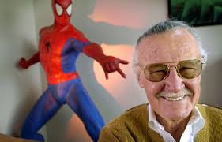

Biographie Stan Lee
Métier : Ecrivain
Nom réel : Stanley Martin Lieber
Signe : Capricorne
Date de naissance : jeudi 28 décembre 1922
Date de décès : lundi 12 novembre 2018 (age: 95 ans)
Pays : États-Unis
Stan Lee, Stanley Lieber de son vrai nom, est né le 28 décembre 1922 à New York. Fils d’un couple d’immigrés juifs originaire de Roumanie, il a un frère, Larry, de 9 ans son cadet. Issu d’un milieu modeste, le petit garçon se réfugie dans la lecture et se plonge dans les histoires de Jules Verne, Charles Dickens ou encore Edgar Allan Poe. Dès l’âge de 10 ans, il commence à écrire ses propres histoires. A l’adolescence, il cumule les petits boulots de livreur ou manutentionnaire afin d’aider sa famille. Grâce à son oncle, Robbie Solomon, il obtient un poste d’assistant dans une maison d’édition, Timely Comics. Il y fait une rencontre déterminante pour la suite de son parcours, celle des créateurs de Captain America, Joe Simon et Jack Kirby. Son talent remarqué, Stan Lee passe d’assistant à rédacteur et publie son premier texte, à l’âge de 19 ans, dans le comics Captain America. Après le départ de Joe Simon et Jack Kirby, Stan Lee est propulsé éditeur de Captain America jusqu’en 1942, date à laquelle il est mobilisé pour la guerre. Il intègre le service communication de l’armée basé en Caroline du Nord puis dans l’Indiana. Après la guerre, il reprend son poste au sein de Timely Comics malgré un contexte économique difficile. En 1961, Stan Lee innove et invente une nouvelle série de personnages avec le dessinateur Jack Kirby; Les Quatre Fantastiques. Très vite, le public adhère à ses nouveaux héros faillibles, et le succès est énorme pour ses bandes dessinées d’un nouveau genre. Dès 1962, il crée un nouveau personnage; celui d’un adolescent complexé qui se transforme en super-héros après avoir été piqué par une araignée radioactive; Spider-Man. C’est à nouveau un succès retentissant. Par la suite d’autres personnages vont suivre et vont connaître le même engouement du public; Thor, Iron Man, Black Panther, Hulk, X-Men…En 1972, Stan Lee est nommé éditeur de Marvel Comics, qui réalise les plus grosses ventes de comics aux Etats-unis. Au milieu des années 70, Stan Lee délaisse peu à peu son rôle de scénariste pour se consacrer à la direction artistique de Marvel. En 1981, il emménage en Californie pour s’occuper des droits télévisuels et cinématographiques des super-héros de Marvel. Mais l’adaptation sur grand écran essuie dans un premier temps quelques échecs. Puis durant la décennie 90, le succès est au rendez-vous avec Spider-man, l’homme araignée, L’incroyable Hulk, Les Quatre Fantastiques…Stan Lee devient producteur exécutif de toutes des adaptations Marvel et apparaît discrètement à l’écran dans chaque film. A la fin des années 90, après le rachat du groupe Marvel par de nouveaux investisseurs, le contrat de Stan Lee est renégocié. Il conserve son titre de producteur exécutif sur les adaptations de ses super-héros mais peut collaborer avec d’autres éditeurs. Il décide d’investir une partie de sa fortune dans internet, mais l’aventure tourne court et sa société fait faillite en 2000. En 2001, il fonde la société de production Pow! Entertainment. Parallèlement, il continue d’apparaître furtivement à l’écran dans les adaptations de ses super-héros, ainsi en 2018; Avengers : Infinity war, Black Panther, Ant-Man et la guêpe. Côté vie privée, Stan Lee épouse Joan en décembre 1947. Le couple a deux filles; Joan Celia née en 1950 et Jan, morte peu après sa naissance en 1953. Le 6 juillet 2017, Stan Lee perd sa femme. Le 12 novembre 2018, il décède à l’âge de 95 ans.
Gallerie Photos
- 
.jpeg)
.jpeg)
.jpeg)
Comment la personne a-t-elle changé votre vie?
- Mr Stan lee m'a fait découvrir les comics.
- Mr Stan lee est un grand cinéaste et créateur.
- les films Marvel sont magiques.